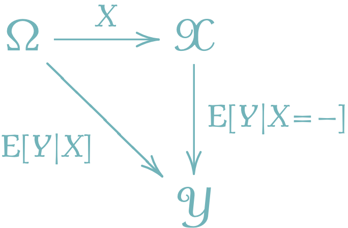

1 条件付き期待値の定義
条件付き期待値を，測度論から厳密に定義する際，ポイントは次の4点である．
A Blog Entry on Bayesian Computation by an Applied Mathematician
$$
$$
1.1 測度論による定義
\(\operatorname{E}[X|\mathcal{G}]\) は \(L^1(\Omega,\mathcal{G},\operatorname{P})\) の元であり，数学的対象としては「関数の同値類」である．関数としてはある零集合の上では定まらない．その任意の代表元も \(\operatorname{E}[X|\mathcal{G}]\) と表すことが多く，1 その場合は，多くの等式には a.s. (= almost surely) がついてまわることになる．
もちろん，\(L^1(\operatorname{P})\) 上の順序関係 \(\le\) を \[ X\le Y:\Leftrightarrow X\le Y\;\;\text{a.s.} \] と定義し，a.s. を省略して書いてもよい．
(Dudley, 2002, pp. 10.1節 p.336), (吉田朋広, 2006, p. 43) がおすすめな参照先．(舟木直久, 2004, p. 88) が入門しやすい．\(X\in L^2(\Omega)\) でいい場合は，より「射影」としてわかりやすい特徴付けがある（ 節 1.3 ）．これのおすすめは (Jacod and Protter, 2004, pp. 第23節 p.200), (Kallenberg, 2021, p. 164)．
1.2 確率変数に関する条件付け
すると，\(X\) が \(\Omega\) 上に引き戻す \(\sigma\)-代数 \[ \sigma(X):=\left\{A\subset\Omega\mid\exists_{B\in\mathcal{E}}\; X^{-1}(B)=A\right\} \] を与えた下での条件付き期待値 \(\operatorname{E}[Y|\sigma(X)]\) と，次のように関係する．2 \(\operatorname{E}[Y|\sigma(X)]\) は定義 節 1.1 1から \(\sigma[X]\)-可測であるが，可測性の特徴付け（後述）から，これはあるBorel可測関数 \(f\) について，\[\operatorname{E}[Y|X]=f(X)\;\;\text{a.s.}\] と表せる．この \(f:\mathcal{X}\to\mathbb{R}\) が，\(X\) を与えた下での \(Y\) の条件付き期待値 \(\operatorname{E}[Y|X=-]\) である．
この記法 \(\operatorname{E}[Y|X=x]\) とは何かというと，\(X\) の値域 \(\mathcal{X}\) 上の関数として，新たに \[\operatorname{E}[Y|X=x]:=f(x)\;\;\text{a.s.}\] と書くことにするのである．3 すると， \[ \operatorname{E}[Y|X=x]|_{x=X(\omega)}=\operatorname{E}[Y|X](\omega)\;\;\text{a.s.} \] も満たす．つまり，次の図式が可換である：

(Dudley, 2002, pp. 定理4.2.8 p.128) は \(S=\mathbb{R}\) の場合，(Landkov, 1972) は \(S=\mathbb{R}^m\) の場合, (Kallenberg, 2021, pp. 補題1.14 p.18) に一般の標準Borel空間の場合の証明がある．nLab も極めて参考になる．
1.3 射影としての特徴付け
\(L^2(\Omega)\subset L^1(\Omega)\) 上に議論を制限してみると，実は \(\mathcal{F}\) の部分 \(\sigma\)-代数 \(\mathcal{G}\) に関する条件付き期待値は，部分空間 \[ L^2_\mathcal{G}(\Omega):=\left\{X\in L^2(\Omega)\:\middle|\:X\,\text{は}\,\mathcal{G}\,\text{-可測}\right\} \] への射影になっている．
1.4 条件付き確率
しかしこの定義には問題がある．条件付き期待値 \(\operatorname{E}[X|\mathcal{G}]\) が \(\Omega\) 上 \(\operatorname{P}\text{-a.e.}\) でしか定まらない（場合がある）から，\(\operatorname{P}\) も一般には可算加法性をa.s.にしか満たさない： \[ \operatorname{P}\left[\bigcap_{n\in\mathbb{N}}A_n\,\middle|\,\mathcal{G}\right]=\sum_{n\in\mathbb{N}}\operatorname{P}[A_n]\;\;\text{a.s.} \] この式自体は後述の単調収束定理（ 節 2.3 ）から示せる．
だが，\(\mathcal{G}\) がある完備可分距離空間に値を取る確率変数 \(Y\) について \(\mathcal{G}=\sigma(Y)\) である場合など，殆どの場合で，うまく \(\operatorname{P}\) を取ることが出来る．5 このように，a.s. 抜きで正式に確率測度として定まる場合，その確率核 \(\operatorname{P}:E\times\mathcal{G}\to[0,1]\) を，正則条件付き確率と呼び分ける．
2 性質
2.1 作用素としての性質
\(\mathcal{G}\)-可測な可積分関数のなす部分空間を \(L_{\mathcal{G}}^1(\Omega)\subset L^1(\Omega)\) で表す．
2.2 Tower Property
2.3 単調収束定理
2.4 可測関数の取り出し
2.5 独立な場合
2.6 条件付き期待値のアトム上での値
条件付き確率の定義 節 1.4 から， \[ \operatorname{P}[Y\in B|X=x]:=\operatorname{E}[1_{\left\{Y\in B\right\}}|X=x] \] と議論できる．さらに \(\operatorname{P}[X=x]>0\) のとき， \[ \begin{align*} &=\frac{\operatorname{E}[1_{\left\{Y\in B\right\}}1_{\left\{X=x\right\}}]}{\operatorname{P}[X=x]}\\ &=\frac{\operatorname{P}[Y\in B,X=x]}{\operatorname{P}[X=x]} \end{align*} \] という見慣れた表示を得る．
3 更なる条件付け
3.1 条件付き独立性
\(\mathcal{C}=\boldsymbol{2}\) であるとき，通常の独立性に一致する（節 2.5 ）．また全ての確率変数は \(\mathcal{F}\)-条件付き独立である（節 2.4 ）．
3.2 条件付き分散
これは条件付き期待値が \(L^2(\Omega)\)-射影であるためである（ 節 1.3 ）．
確率変数 \(Y\in\mathcal{L}^2(\Omega)\) の \(\mathcal{G}\) に関する条件付き分散を \[ \begin{align*} \mathrm{V}[Y|\mathcal{G}]&:=\operatorname{E}\left[(Y-\operatorname{E}[Y|\mathcal{G}])^2|\mathcal{G}\right]\\ &=\operatorname{E}[Y^2|\mathcal{G}]-\operatorname{E}[Y|\mathcal{G}]^2 \end{align*} \] と定める．このとき，次の 全分散の公式 と呼ばれる関係が成り立つ： \[ \mathrm{V}[Y]=\operatorname{E}[\mathrm{V}[Y|\mathcal{G}]]+\mathrm{V}[\operatorname{E}[Y|\mathcal{G}]]. \]
3.3 条件付き共分散
証明は (Kallenberg, 2021) 補題8.2 p.166 など．
References
Footnotes
(Dudley, 2002, p. 340) など．↩︎
(Dudley, 2002, pp. 定理10.2.2 p.345)．一般には Borel空間に値を取る確率変数について成り立つ (Kallenberg, 2021, p. 165)．↩︎
(Kallenberg, 2021, pp. 170–171) 定理8.9 も参照．↩︎